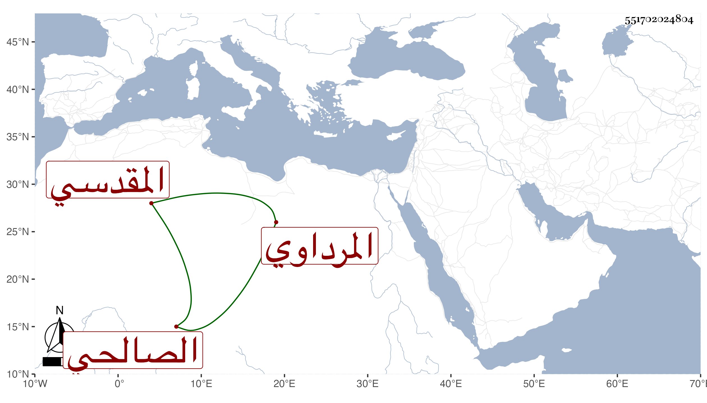

0902Sakhawi.DawLamic.ITO20230111-ara1.EIS1600.551702024804
Biography ID: 551702024804
1042
محمد بن أحمد بن عبد الحميد بن محمد بن غشم الشمس المرداوي المقدسي ثم الصالحي . سمع من أبي العباس المرداوي وعبد الرحيم بن إبراهيم ابن الملقن وزينب ابنة الكمال وجماعة وحدث سمع منه الفضلاء روى لنا عنه بعض شيوخنا بل أجاز لشيخنا وأورده في معجمه وغيره . ومات في شوال سنة إحدى وتبعه المقريزي في عقوده .
